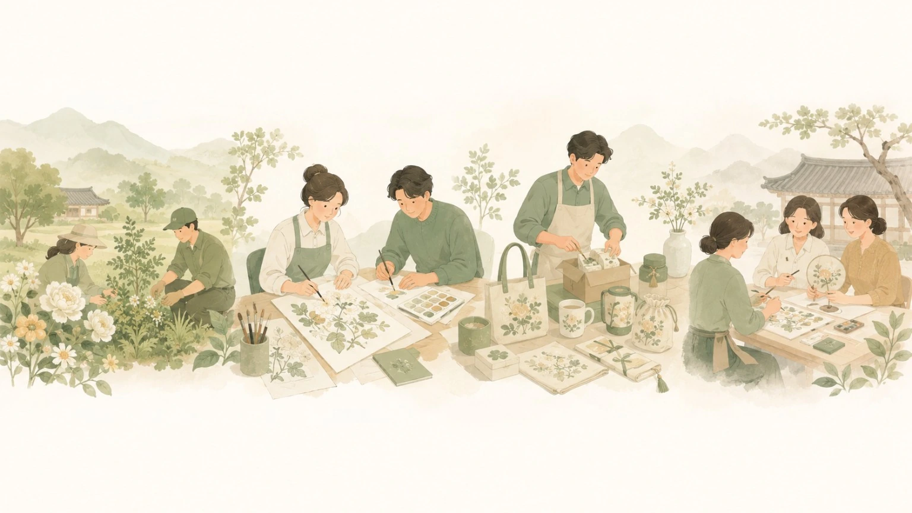
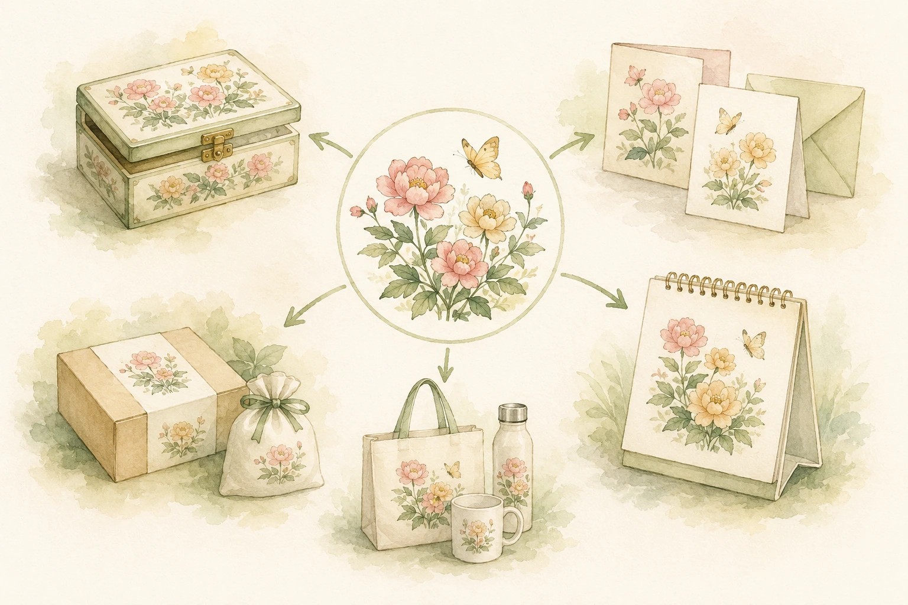

ARTIST PROFILE민화 작가 소개
작품과 이력을 위한 전용 공간


대표 작품출강 문의주문제작
작가 개인 갤러리 구성 시안 · 실제 프로필과 작품은 확보 후 교체
민화 교육과 작품 활동을 이어 온 작가와 함께, 개인 작품을 소개하는 온라인 갤러리와 아틀리에를 준비합니다. 작품 활동의 기록이 새로운 전시·주문제작·출강 기회로 이어질 수 있도록 태장이 운영을 지원하는 방향입니다.
작가 실명·사진·수상 및 출품 이력은 확인된 자료와 공개 동의에 따라 순차 반영합니다.
작품과 이력을 위한 전용 공간

작가 개인 갤러리 구성 시안 · 실제 프로필과 작품은 확보 후 교체
작품의 권리와 공개 범위를 먼저 확인합니다. 정식 작품 사진이 준비되기 전에는 태장에 이미 공개된 작업·콘셉트 자료로 갤러리 구성을 보여드립니다.

현재 전시 이미지는 작가의 등록 원화 목록이나 판매 작품이 아닙니다. 실제 전시는 작가·직원의 이용허락과 사진 확보 이후 단계적으로 교체합니다.
 WORK & CREATION
WORK & CREATION태장은 장애인 근로자를 대상으로 정기적인 민화 교육과 작품 활동을 이어가고 있습니다. 익숙하지 않았던 선과 색을 반복해 연습하며, 저마다의 속도로 완성작을 만들어갑니다.
교육을 맡은 작가는 약 반년의 수업에서 일부 참여자의 작업 집중과 표현 방식이 달라지는 모습을 관찰했다고 전했습니다. 이는 현장 경험의 기록이며 의학적 치료 효과를 입증한 내용은 아닙니다.
기존 직원 교육을 바탕으로 일반인 초급반과 기관·단체 대상 프로그램으로의 확장을 검토하고 있습니다.
정기 지도를 통해 채색과 작품 완성에 참여합니다. 각자의 작업 속도와 선호에 맞는 활동을 이어갑니다.
기존 민화 교육처음 민화를 접하는 사람도 선과 채색을 차근차근 배울 수 있는 입문 프로그램을 구상하고 있습니다.
정원·시간·참가비 협의 중학교·기업·기관의 목적과 참여자 특성에 맞춰 작품과 활동을 구성하는 교육·체험 협업을 검토합니다.
강의 구성·일정 개별 협의민화는 문화예술 교육·창작 활동입니다. 집중·정서·신체 기능에 대한 치료 효과를 보장하거나 의료·재활 프로그램으로 소개하지 않습니다.
민화의 색과 이야기를 생활 소품과 선물에 담는 방법을 검토하고 있습니다. 엽서·아트프린트·보석함·채색키트 등은 작품과 제작 역량, 원가와 품질을 확인해 순서대로 시제품을 준비합니다.
이미지는 상품화 구성 예시로, 현재 판매·주문 가능한 품목을 의미하지 않습니다.
상품화·주문제작 협의작가의 기존 작품과 태장의 공동 제작 결과물은 권리 관계를 구분합니다. 작품의 공개·홍보·상품화는 각 작품의 사용허락 범위를 확인한 뒤 진행합니다.
태장은 장애인 표준사업장으로서 제품과 용역의 실제 생산·제공 여부 및 계약 조건을 검토하여 공공기관 구매 상담을 진행합니다. 모든 판매품이 자동으로 우선구매 실적에 인정되는 것은 아닙니다.
기업·공공기관 구매 상담작가 협업, 민화 활동, 기관 출강, 주문제작과 굿즈 개발에 관한 문의를 태장에 전달해 주세요.